What is Evidence Synthesis?
Evidence Synthesis is the process of bringing together all available information relevant to a research question, to inform decisions and policy. It moves beyond simply summarizing single studies to generating robust, generalizable findings. This rigorous process involves systematic searching, critical appraisal, data extraction, and meta-analysis.
Directory Policy: This directory lists only Open Source, non-proprietary academic tools. The complete source code must be publicly available (e.g., on GitHub, GitLab, or similar platforms), allowing anyone to inspect, reuse, and build upon it. Proprietary or closed-source software (EndNote, Covidence, DistillerSR, NVivo, Stata, SAS, Rayyan, etc.) is strictly excluded.
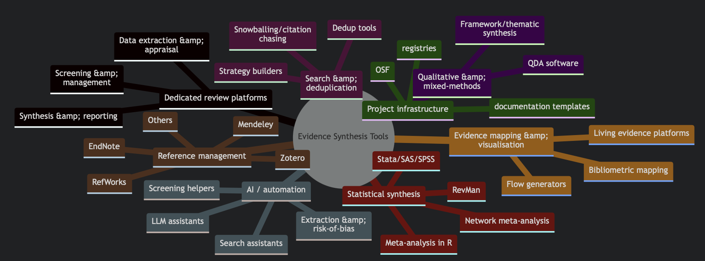
Why Open Source? We prioritize open-source tools to ensure full transparency and reproducibility in research. Open-source software allows researchers to inspect the underlying code, avoiding reliance on proprietary "black box" algorithms. Furthermore, it fosters a collaborative ecosystem where researchers can directly fork, extend, and improve existing tools, accelerating innovation while ensuring long-term accessibility and independence from commercial vendors.
These range from AI-assisted screening platforms that help find relevant studies amidst thousands of papers, to Risk of Bias (RoB) visualization tools, to smaller scripts and libraries that automate specific tasks in the synthesis pipeline.
This directory specifically highlights number tools / softwares till the year number.
Search & Strategy Development
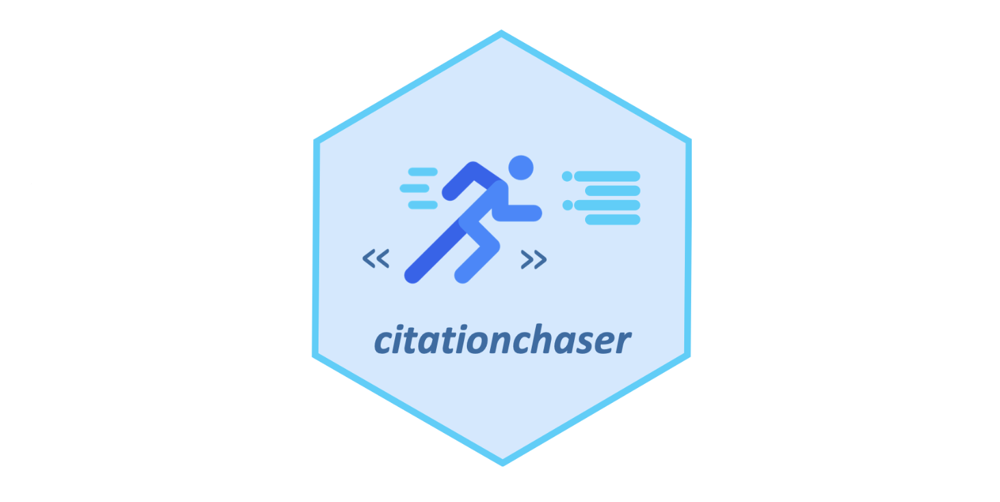
CitationChaser
Automates backward and forward citation chasing using Lens.org API to find cited and citing papers for systematic reviews.
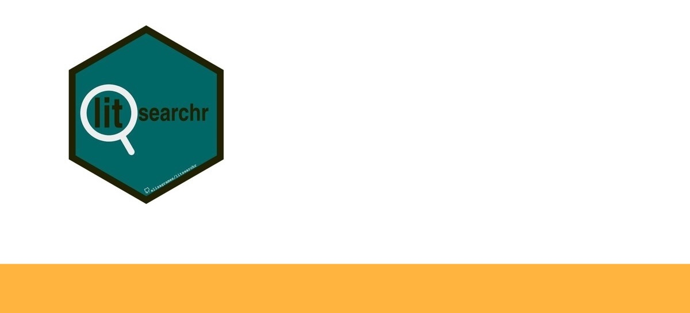
litsearchr
An R package and Shiny app that uses text mining to identify important search terms, builds Boolean strings across databases, and test search performance.
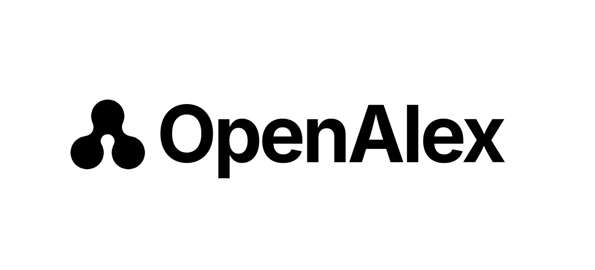
OpenAlex
A fully open catalog of the global research system providing an API to retrieve millions of works, authors, and concepts for searching.

R: RISmed
R package for accessing data and downloading records from PubMed and NCBI databases programmatically.
R: easyPubMed
A wrapper for the NCBI Entrez API allowing users to query PubMed and parse XML results into R data frames.
PubTator Central
A web-based semantic annotation system for biomedical literature, automatically recognizing concepts like genes, diseases, and chemicals.
KNIME
An open-source analytics platform allowing users to create data science flows without coding, often used for text mining and search strategies.
Unpaywall
An open-source browser extension and database that instantly finds free, legal full-text PDFs for your scholarly references.
CoPub
An open-source text mining tool to find associations between genes, drugs and diseases in the biomedical literature.
R: openalex
An R interface to the OpenAlex API for accessing bibliographic data and concepts programmatically.
Search Appraiser (SR Accelerator)
A tool to test the relative performance of multiple search strategies by comparing their recall against a gold standard set.
Word Frequency Calculator (TERA)
Identifies the most frequent words and word combinations in a set of citations to help refine search strategies.
Reference Management & Deduplication

Zotero
Free, open-source reference manager that helps collect, organize, cite, and share research sources. Highly extensible with plugins.
JabRef
Open-source bibliography reference manager. The native file format used is BibTeX, standard for LaTeX.
dedupr
A Shiny web app for uploading RIS files to perform automatic deduplication of references using standard fields.
Deduplicator (SR Accelerator)
A tool designed to identify and remove duplicate records across bibliographic datasets for systematic reviews.
OpenRefine
A power tool for working with messy data, cleaning it, transforming it, and extending it with web services.
BiblioGlutton
An open-source browser extension that recommends papers and automatically adds references to your library.
Docear
An open-source academic literature suite based on mind mapping, helping to organize PDFs and annotations.
ZotFile
An open-source Zotero plugin to automatically rename and attach PDFs to your references.
Stork
An open-source reference manager for Linux and MacOS focusing on simplicity and command-line usage.
BibDesk
An open-source graphical BibTeX editor and bibliography manager for macOS.
Citationsy
A lightweight, open-source reference manager for macOS and Linux using file system storage.
BibSonomy
An open-source social bookmarking and publication sharing platform for researchers.
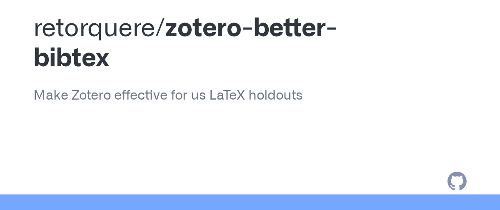
Zotero Better BibTeX
A plugin for Zotero that automatically generates BibTeX keys and exports.
Papis
A powerful and highly extensible document and bibliography management system / library.
Manubot
Open-source software for creating scholarly manuscripts via YAML citations. Generates citations and formats using pandoc/citeproc.
Dedupe
A Python library for fast, scalable fuzzy matching and deduplication of records (e.g., citations).
Screening & Selection
ASReview
An open-source machine learning tool for systematic reviews that assists researchers in screening papers interactively and efficiently.
ReviewAid
An open-source AI full text screening & data extraction assistant designed to speed up systematic review process.
Abstrackr
A free, open-source web application designed to help researchers screen citations for systematic reviews using machine learning.
Colandr
An open-source web-based tool for systematic review workflows, from deduplication and screening to extraction and manuscript drafting.
RobotAnalyst
An interactive system combining machine learning with active learning to prioritize relevant documents for screening.
Screenatron (TERA)
A tool to help prioritize citations for screening using topic modeling and word frequency analysis.
Prioritizer (SR Accelerator)
A tool that uses semi-automated ranking to identify and prioritize most relevant citations for screening.
SWIF-Review
An R package that supports systematic screening process through interactive review and active learning prioritization.
R: revtools
A toolkit for systematic reviews in R, facilitating article screening via visual inspection and topic modeling of search results.
R: metagear
R package that provides tools for article deduplication, downloading PDFs, and interactive screening.
ASReview LAB
The active research project behind ASReview, developing new models and exploring limits of automated screening.
Sysrev
Open source software platform for systematic reviews, supporting collaboration, tagging, and data extraction.
Data Extraction & Utilities
Tabula
A tool for liberating data tables locked inside PDF files. It extracts tables into CSV or Excel formats for data extraction.
WebPlotDigitizer
An open-source, semi-automated tool to extract numeric data from plot images. Useful for extracting data from graphs.
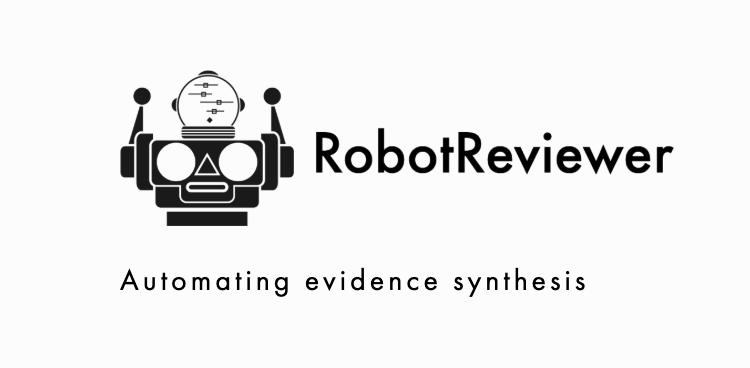
RobotReviewer
An open-source system that automates risk-of-bias assessment and data extraction for randomized controlled trials using NLP.
SRDR+ (Systematic Review Data Repository)
A free web-based tool for data extraction and archiving. It facilitates extraction and storage of study data.
ExaCT
NLP/ML system to extract study characteristics from randomized trial full-texts.
GROBID
A machine learning library and tool for extracting information (tables, references) from scientific documents in PDF format.
OCRmyPDF
A command line tool (Tesseract based) to OCR scanned PDF files, useful for extracting text from image-based PDFs.
Tesseract OCR
The most popular open-source Optical Character Recognition (OCR) engine, used to extract text from images and scanned PDFs.
Pandoc
A universal document converter that turns files from one markup format into another (e.g., PDF to Markdown/HTML).
Camelot
A Python library that helps you extract tables from PDFs, providing a command line interface and PDF table extraction.
PDFPlumber
A Python library to reliably extract text and tables from PDFs, even complex layouts.
SciSpaCy
A Python library containing spaCy models for processing biomedical, scientific or clinical text. Ideal for extraction tasks.
REDCap
Research Electronic Data Capture. A secure, open-source web application for building and managing online surveys and databases for extraction.
Nougat
An open-source model (Meta) that converts scientific PDFs to Markdown, facilitating text and table extraction from PDFs.
PDFtk (PDF Toolkit)
A tool for performing everyday tasks on PDF files (splitting, merging, rotating) without editing content.
PyPDF2
A pure-Python library built as a PDF toolkit, capable of extracting document information, splitting, merging, and cropping.
Refine-NLP
An open-source tool for extracting structured summaries from unstructured biomedical text.
ImageJ
An open-source Java-based image processing program, often used to extract data points from raster plots.
Engauge Digitizer
Open source software for converting image files back to numbers, extracting data from graph images.
Recogito
An open-source web-based tool for collaborative document annotation.
Hypothes.is
An open-source layer over web for annotating documents, web pages, and PDFs.
DataThief
A program to reverse engineer data points from a scanned plot. Classic Java-based digitizer.
PlotDigitizer.com
Open source web-based tool to extract data from graphs, plots, and maps.
Litmaps
Open-source tool for visualizing citation network of papers, helping researchers explore related literature spatially.
Risk of Bias & Visualization Tools
Critiplot
A specialized open-source tool for generating traffic light plots for MMAT, ROBIS, GRADE, NOS, JBI Case Series/report assessments.
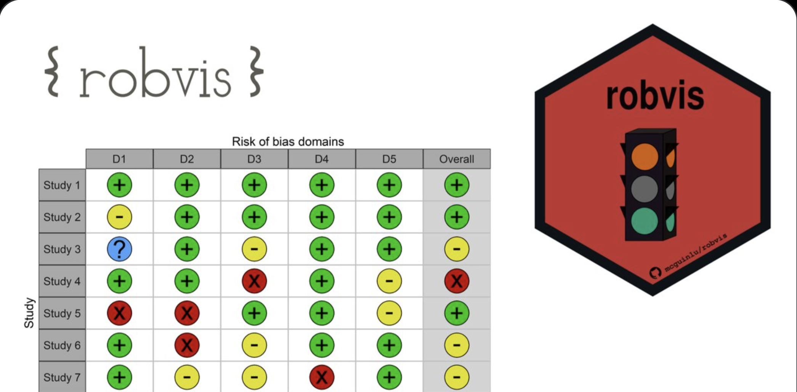
robvis
An R package and web app for generating risk-of-bias assessment plots. It supports RoB2, ROBINS-I, QUADAS-2, and more.
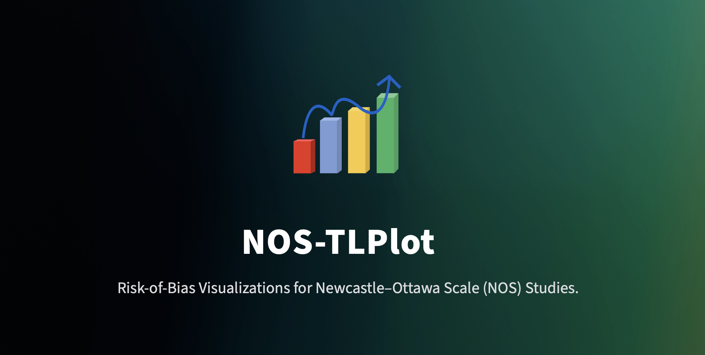
NOS-TLPlot
Open-source tool designed to visualize Newcastle-Ottawa Scale (NOS) assessments using traffic light plots.
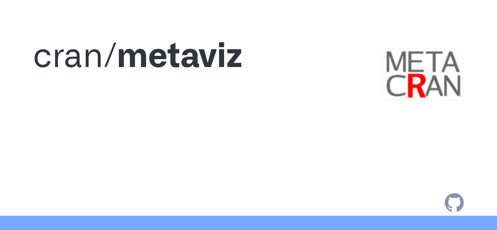
metaviz
An R package for creating flexible visualizations for meta-analytic data, including rainforest plots and subgroup visualizations.
R: EValue
R package to calculate E-values, metrics to assess robustness to unmeasured confounding in meta-analyses.
R: grader
An R package that implements GRADE (Grading of Recommendations Assessment, Development and Evaluation) approach.
R: pcheck
Functions to compute and test publication bias in meta-analysis, including funnel plots asymmetry.
R: syuzhet
Test for excess significance in meta-analysis (funnel asymmetry and p-curves).
R: psychometrica
Functions for calculating effect sizes (Cohen's d, odds ratio, etc.) and bias indices (Fail-safe N).
Statistical Analysis & Meta-Analysis
R: metafor
A comprehensive R package for conducting meta-analyses, including fixed/mixed-effects models, meta-regression, and multilevel models.
R: meta
An R package providing a user-friendly interface for conducting meta-analysis in clinical research and beyond.
R: netmeta
An R package for frequentist network meta-analysis using a graph-theoretical approach.
OpenMEE
An open-source, cross-platform software for meta-analysis in ecology and evolution, but applicable to other fields. Uses 'metafor' engine.
OpenMeta[Analyst]
An open-source software for meta-analysis and meta-regression with a user-friendly graphical interface.
JASP
Free and open-source software for statistical analysis, featuring a user-friendly interface similar to SPSS with modules for meta-analysis.
MIX 2.0
A free Excel add-in for meta-analysis, offering detailed graphics and usability for standard effect sizes.
Meta-Essentials
A free workbook for meta-analysis containing macros for forest plots and various meta-analysis calculations.
OpenEpi
Web-based, open-source epidemiologic calculators, useful for calculating statistics during review process.
PyMC
A Python library for Bayesian statistical modeling and Probabilistic Machine Learning, useful for Bayesian Network Meta-Analysis.
JAGS
Just Another Gibbs Sampler. A program for analysis of Bayesian hierarchical models using Markov Chain Monte Carlo (MCMC).
Stan
State-of-the-art platform for statistical modeling and high-performance statistical computation.
NetMetaXL
An Excel tool for conducting network meta-analysis and producing network diagrams, forest plots, and league tables.
R: meta4diag
R package for Bayesian meta-analysis of diagnostic test accuracy data, handling correlated sensitivities and specificities.
R: mada
R package for meta-analysis of diagnostic accuracy data. It provides many models and plots.
R: admetan
Functions for meta-analysis of diagnostic test accuracy data and generic meta-analysis.
R: bmeta
R package for conducting Bayesian meta-analysis and meta-regression using JAGS.
R: MAc
Meta-Analysis of Correlations. R package for meta-analyzing correlation matrices.
R: POMETE
Pairwise and Multiple Outcome Meta-analysis Tool for Epidemiologists.
R: metaRNAseq
Meta-analysis of RNA-Seq count data. Standardization for cross-study comparison.
R: metaMA
An R package for meta-analysis of means, ratios, and diagnostic accuracy, supporting univariate and multivariate models.
R: metaSEM
An R package for conducting meta-analytic structural equation modeling (MASEM).
R: gemtc
Network meta-analysis using a Bayesian graphical model framework via JAGS.
R: multinma
Network meta-analysis of randomized trials and observational studies using Stan.
R: dosresmeta
R package for performing dose-response meta-analysis.
PyMARMA
Python library for Meta-Analysis and Regression Modeling, including visualization and statistical analysis.
R: MetaForest
R package applying Random Forests to meta-analytic data to explore heterogeneity and model complex relationships.
R: Bayesmeta
R package for conducting Bayesian random-effects meta-analysis with a focus on robust parameter estimation.
R: metapower
R package for power analysis for meta-analysis, helping researchers determine sample size requirements.
R: metaumbrella
R package specifically designed to perform "Umbrella Reviews" (systematic reviews of multiple meta-analyses).
R: pimeta
R package for calculating prediction intervals for meta-analysis, providing insights into the range of future effects.
R: metaplus
R package for random-effects meta-analysis using heavy-tailed distributions (t-distribution) to handle outliers.
R: robustmeta
R package for robust statistical inference in meta-analysis, protecting against model violations.
R: metamedian
R package for median-based meta-analysis, providing robust alternatives to mean-based aggregation.
R: metaLik
R package for likelihood-based methods for meta-analysis and diagnostic accuracy.
R: brms
An interface to Stan for Bayesian regression models. Can be used for complex multilevel meta-analysis.
R: R2OpenBUGS
An R package that allows running OpenBUGS Bayesian software from R.
BUGSnet
A web-based platform for Network Meta-Analysis (NMA) using OpenBUGS software, with visualization tools.
R: robumeta
An R package for robust variance estimation (RVE) in multilevel meta-analysis models.
R: dmetar
A package to fetch data from literature for meta-analysis and format it for use with 'metafor'.
R: psychmeta
R package specialized for psychology meta-analysis, including correlations and standardized mean differences.
R: meta-analyst
An R package wrapping various functions for meta-analysis, providing a unified interface.
MAvis
Meta-Analysis Visualization via Shiny. An interactive tool to visualize meta-analysis data (forest, funnel, L'Abbe plots).
ShinyMeta
A Shiny app for performing meta-analysis and meta-regression using the 'metafor' package backend.
R: compute.es
R package for computing effect sizes (d, g, r, log odds ratio) and their variances from various test statistics.
R: prediction
Package to calculate predictive intervals and p-scores for network meta-analysis.
Visualization & Evidence Mapping
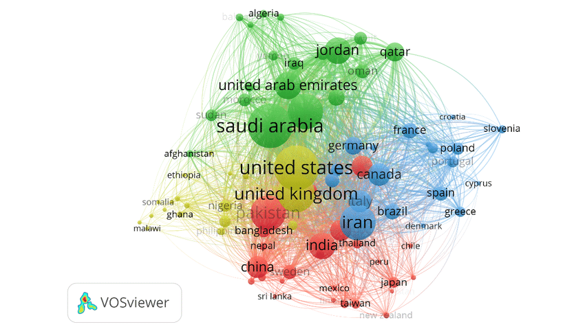
VOSviewer
A software tool for constructing and visualizing bibliometric networks. Useful for evidence mapping and co-citation analysis.
CiteSpace
A Java application for visualizing and analyzing trends and patterns in scientific literature, used for science mapping.
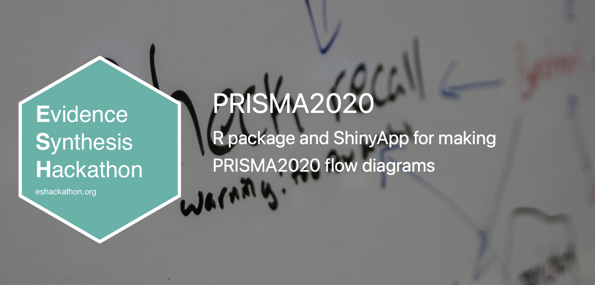
PRISMA 2020 (Flow Diagram)
The official PRISMA 2020 Flow Diagram Generator (Shiny App) automatically creates a correctly formatted PRISMA flow diagram after you input your study screening numbers.
RawGraphs
An open-source platform built to create custom visualizations on top of the D3.js library, useful for flexible data visualization.
EviAtlas
A tool for creating systematic map visualizations. It helps organize and display distribution of evidence in a specific field.
bibliometrix
A comprehensive tool for quantitative research in bibliometrics and scientometrics. Includes interactive web-app 'biblioshiny'.
CiteNetExplorer
A software tool for exploring and analyzing citation networks, particularly useful for identifying main citation paths.
CRExplorer
A software tool for cited references exploration, analyzing development of research fields based on cited references.
Gephi
An open-source visualization and exploration platform for all kinds of graphs and networks.
Cytoscape
An open source software platform for visualizing complex networks and integrating these with any type of attribute data.
QGIS
A free and open-source Geographic Information System, essential for systematic maps involving spatial data.
R: wordcloud
An R package for creating word clouds, useful for visualizing frequent terms in search results.
R: ggraph
R package for plotting complex graph structures (networks), useful for visualization of citation networks.
R: ggplot2
The foundational system for declaratively creating graphics (forest plots, funnel plots) in R.
R: patchwork
An R package to combine separate ggplot objects into a single figure (e.g., multi-panel forest plots).
R: cowplot
Themes for ggplot2 to produce publication-ready plots.
Graphviz
Open source graph visualization software. Graph visualization is a way of representing structural information as diagrams of abstract graphs and networks.
Automation, Libraries & Scripting
Carrot2
An open-source search platform and clustering engine for scientific literature, facilitating search result refinement.
Sci2
A strong tool for science mapping and bibliometric analysis using Lens data.
PyMedTermino
A Python library for using MeSH vocabulary to create and manage search strings for PubMed.
BioEntrez
Python scripts for interacting with Entrez, providing programmatic access to NCBI databases.
R: RTextTools
R package for text mining and term frequency analysis, useful for screening and search term development.
ArviZ
A Python library for exploratory analysis of Bayesian models, providing plots and summary statistics for PyMC/Stan.
R: forestplot
A lightweight R package for creating forest plots, offering an alternative to standard meta-analysis graphics.
R: clubSandwich
Cluster-robust (sandwich) variance estimators for fitting models with effects that cluster.
R: MICE
Multivariate Imputation by Chained Equations. R package for handling missing data in systematic reviews.
PSPP
A free, open source replacement for SPSS. Useful for descriptive statistics and basic tests in systematic reviews.
Gretl
GNU Regression, Econometrics and Time-series Library. Open source alternative for econometric analysis.
Git / GitHub
Distributed version control system, essential for reproducible research and managing search strategy code.
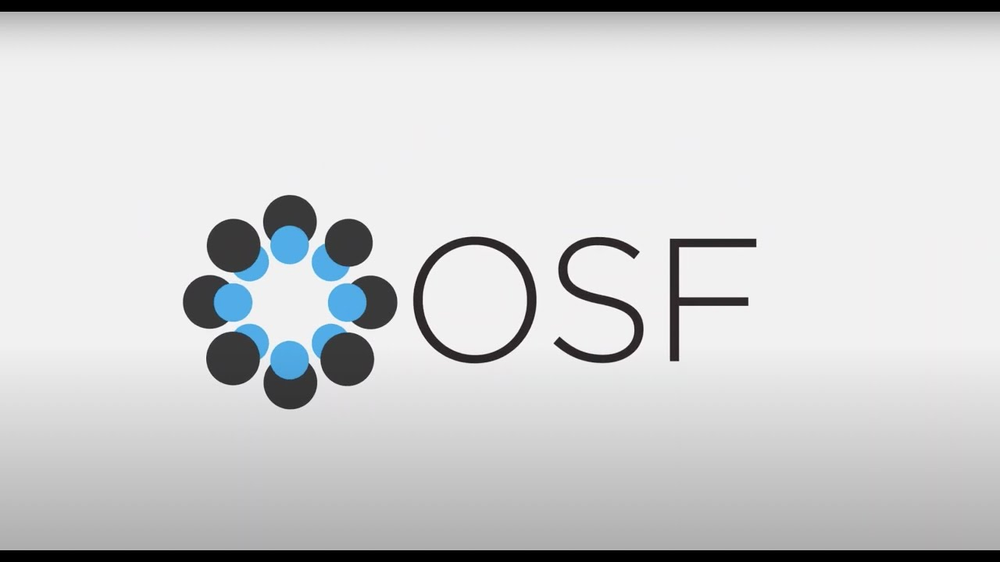
OSF (Open Science Framework)
An open-source project management tool supporting full research lifecycle, from preregistration to data sharing.
spacy
Industrial-strength Natural Language Processing (NLP) library for Python, used for extraction and screening.
R: tidytext
R package for text mining using 'tidy data' principles, essential for screening and sentiment analysis.
R: quanteda
R package for quantitative analysis of textual data, crucial for preprocessing text in systematic reviews.
R: topicmodels
R package for topic modeling (e.g., Latent Dirichlet Allocation) to classify documents.
R: snowballC
R package for text stemming (reducing words to their root form), crucial for cleaning search terms.
R: udpipe
An R package for fast text tokenization and POS tagging via NLP.
Citation.js
An open-source JavaScript library for formatting citations in CSL styles, useful for web developers of review tools.
scikit-learn
Python's premier machine learning library, used to build custom classification models for screening.
transformers
Hugging Face library for pre-trained NLP models (BERT), used for advanced screening and extraction.
R: R Markdown
Framework for dynamic reporting, turning analysis code into reproducible reports.
R: bookdown
Create books and long-form reproducible reports from R Markdown.
Beautiful Soup
Python library for pulling data out of HTML and XML files. Useful for web scraping search results.
PDFMiner.six
Python library for extracting information from PDF documents (text, images, metadata).
Gensim
Python library for topic modeling, document indexing and similarity retrieval with large corpora.
R: statcheck
R package to automatically extract statistics from articles and recalculate p-values to detect inconsistencies.
Whoosh
Fast, pure Python search engine library. Useful for building custom local search indices of PDF libraries.
GPT-Researcher
An open-source autonomous agent that conducts comprehensive research on any topic using LLMs to generate detailed reports.
Qualitative Analysis
Taguette
An open-source qualitative analysis tool that supports code-and-retrieval and uses simple text files.
QualCoder
A fully open-source qualitative analysis tool for text, audio, video, and images, with advanced coding features.
R: RQDA
R Qualitative Data Analysis package for managing qualitative data and coding.
CATMA
Computer Assisted Text Markup & Analysis. A Java-based open source tool for collaborative text analysis and annotation.
Weft QDA
A lightweight, open-source qualitative data analysis tool for Windows and Mac.
Aquad
A modern, open-source qualitative analysis tool designed to be user-friendly and cross-platform.
Support & Contributions
This directory strives to be a comprehensive, transparent resource for the research community. Contributions and suggestions are welcome, provided the tools meet the inclusion criteria outlined below.
- Open Source License: The tool must be released under a recognized open-source license (e.g., MIT, GPL, Apache).
- Public Code Repository: Source code must be publicly accessible (e.g., GitHub, GitLab, Bitbucket).
- Non-Proprietary: The software must be free to use, with no closed-source components or mandatory commercial dependencies.
- Reusable & Extensible: The repository should contain sufficient documentation to allow reuse, extension, and community-driven development.
- Research-Focused: The tool should be relevant to evidence synthesis, systematic reviews, meta-analysis, or closely related workflows.
- Submissions: Suggestions can be made via email or by opening an issue or pull request on GitHub.
Tools that are free but closed-source, freemium, or require institutional licenses are not considered.